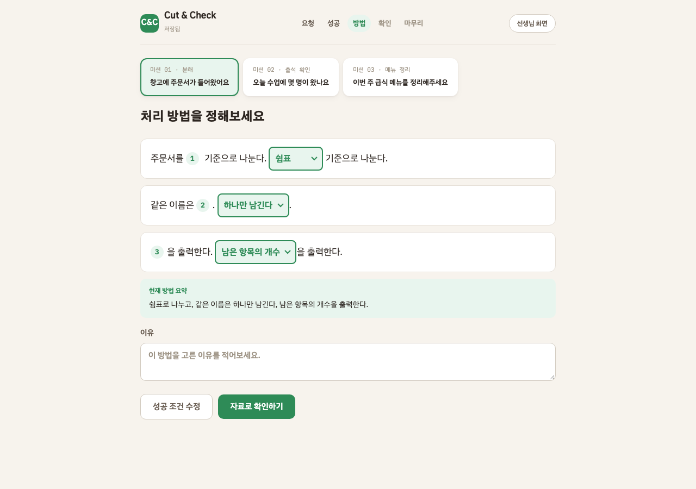
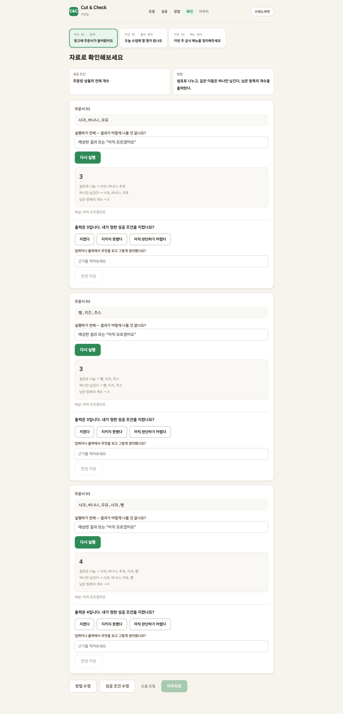
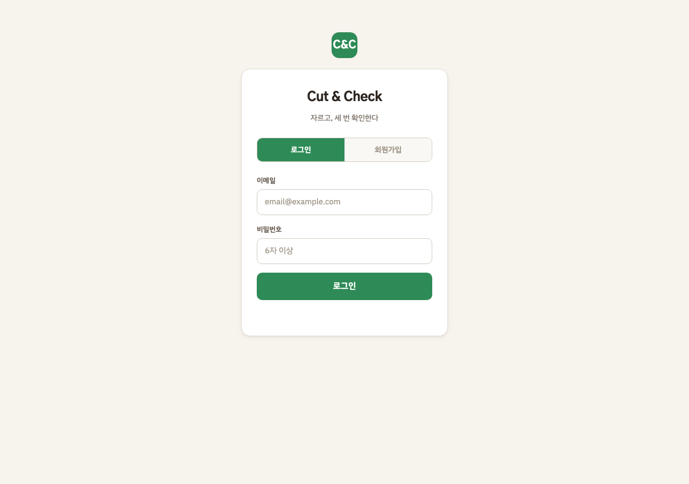

C&C
자르고, 세 번 확인한다
정답을 맞히는 게 아니라, 내가 정한 방법이 끝까지 버티는지 확인하는 수업 도구.
시작은 대신해주고, 판단은 하나도 대신하지 않는다.
이 한 줄이 모든 기능의 기준입니다.
학생 화면
빈 화면 대신, 선택형 빈칸
코드를 치지 않습니다. 문장의 빈칸을 골라서 방법을 만듭니다. 시작에서 막히지 않으니 판단에 집중할 수 있습니다.

학생 화면
"틀렸어요"라고 말하지 않습니다
결과를 보여주고, "내가 정한 성공 조건을 지켰는가" 학생이 직접 판정합니다. 시스템은 거울이지 채점기가 아닙니다.

학생 화면
세 번째 자료에서 결과가 달라집니다
같은 방법인데 자료가 바뀌면 결과가 달라집니다. "항상 3"이 아니라 "왜 달라졌는지"를 학생 스스로 발견합니다. 힌트는 주지 않습니다.
강사 화면
정답률 대신, 지금 누구부터 가야 하는가
점수·순위·소요 시간은 보여주지 않습니다. 대신 조용히 막힌 학생, 도움 요청, 칭찬 타이밍을 보여줍니다.

강사 화면
수업 내용을 입력하면 미션이 만들어집니다
오늘 배운 것과 핵심을 적으면 AI가 맞춤 문제를 생성합니다. 세 번째 자료에는 반드시 중복이 포함됩니다.
의도적으로 만들지 않은 것
점수 · 레벨칭찬을 기계에 넘기면 사람의 격려가 싸구려가 된다
정답 채점채점하면 학생이 우리 답을 추측하기 시작한다
AI 칭찬타이밍만 알려주고 말은 선생님이 한다
정답률 · 순위숫자를 띄우면 교사가 줄을 세운다
다음 행동 추천판단 대행의 가장 흔한 형태
반 전체 현황옆자리 진도가 보이면 속도 경쟁이 된다